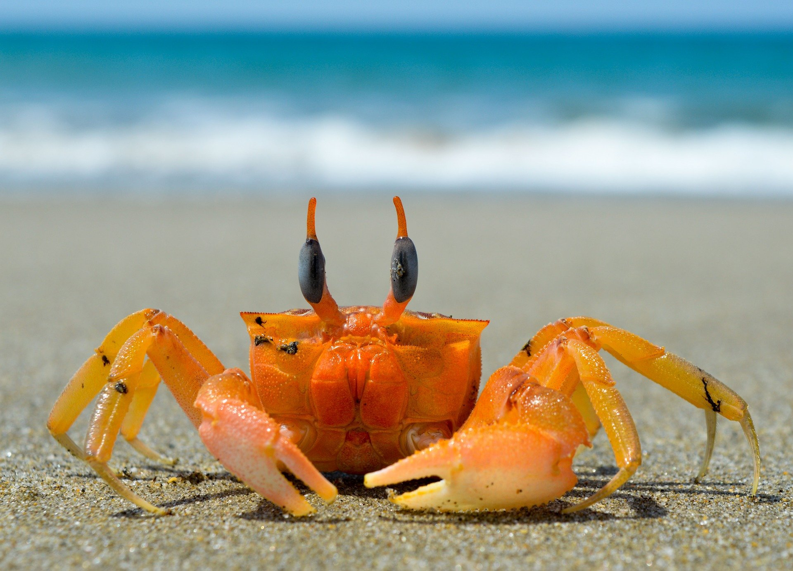
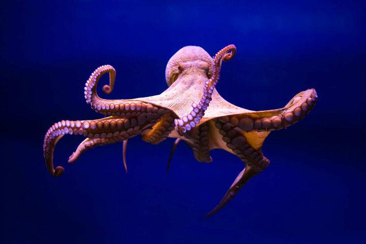
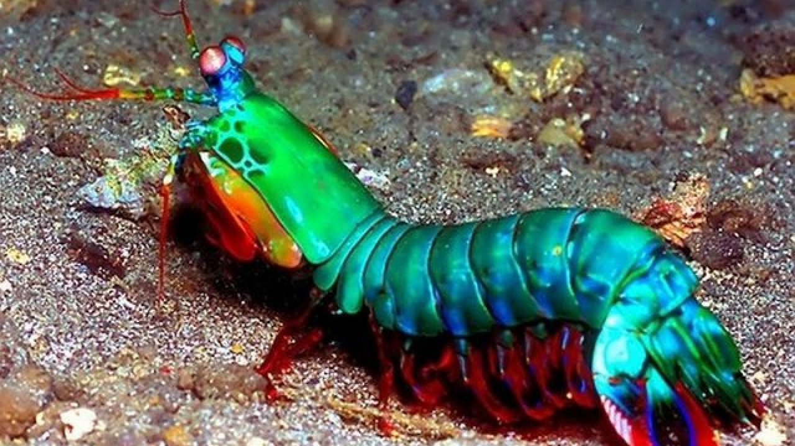

Los peces y los mamiferos no son los únicos habitantes del océano. Los crustáceos (del latín costra que significa “corteza”) son artrópodos que poseen un exoesqueleto articulado y su tamaño puede variar entre un milímetro hasta cuatro metros de longitud. Existen unas seis mil setecientas especies vivientes. Como todos los artrópodos, los crustáceos son animales invertebrados La mayoría son especies acuáticas y pueden vivir en agua salada (como el krill), en agua dulce (como el cangrejo de río) o incluso pueden vivir en ambos tipos de agua (como el camarón).
Tambien están los moluscos, en los cuales pueden hallarse individuos de este grupo a más de 3.000 metros sobre el nivel del mar y también en profundidades oceánicas de más de 5.000 metros. Los Moluscos forman uno de los filos de animales más numerosos y variado e incluyen animales tan dispares como los caracoles, los pulpos o las almejas, por mencionar algunos ejemplos.
Por otra parte están los reptiles marinos los cuales son animales saurópsidos de lo más curiosos si tenemos en cuenta la evolución que han tenido a lo largo de la historia. Como el resto de reptiles, han conservado sus escamas de queratina y su reproducción mediante el huevo amniótico. Actualmente, son parte activa de la biodiversidad, estando algunas especies amenazadas por el hombre.
La mantis religiosa es uno de los insectos más conocidos y populares del mundo no solo por su extraordinaria belleza y por los significativos tamaños que pueden alcanzar, sino también por su conocida conducta de devorar a los machos durante o después de la cópula. Pero existe otro artrópodo, en este caso un crustáceo marino, que también recibe el nombre de mantis por su parecido físico al insecto anterior y que es mucho menos conocido pero igual de fascinante que este, tanto por su físico como por su conducta.
Una de las características más llamativas de estas criaturas es su sorprendente fuerza. Al igual que las mantis religiosas, presentan unas extremidades anteriores raptoras muy fuertes con las que, mediante rápidos movimientos que están entre los más extremos que se conozcan en el reino animal, capturan a sus presas, perforándolas o triturándolas, en dependencia de si los apéndices son espinosos o con forma de garrote o martillo.
La velocidad del ataque es tal que puede compararse a la aceleración que alcanza una bala de calibre 22 y, si de casualidad falla el ataque, la onda de choque que produce es tal que puede aturdir de tal manera a la presa que esta difícilmente escapará. Es conocido que algunas especies han llegado a romper el cristal de algunos acuarios y que, por unos milisegundos, pueden producir un chispazo submarino solo visible con los instrumentos científicos adecuados y que es capaz de alcanzar cientos de grados de temperatura.
Otra curiosidad sobre esta especie es que sus ojos están entre los más complejos que existen, están compuestos por miles de estructuras llamadas omatidios en cada ojo, que se disponen de tal manera que les permiten una visión trinocular, con una amplia percepción de la profundidad. A su vez estos ojos están situados en pedúnculos que se mueven independientemente uno de otro, por lo que es difícil que algo escape a su aguda mirada.
El calamar gigante es el molusco más grande del mundo, perteneciente al género Architeuthis. Este temible animal ha sido protagonista de numerosas leyendas de marineros, la más famosa la del Kraken, una criatura marina de la mitología escandinava que devoraba los barcos con su abrazo mortal. Son muchos los enigmas que rodean a estos moluscos, ya que, al nadar en las profundidades de los mares, no se acercan a la superficie o a las costas, y sus avistamientos son una verdadera rareza. De hecho, cuando son capturados suelen encontrarse en mal estado, moribundos o muertos.
En 2004, investigadores del Museo Nacional de Ciencias de Japón y la Asociación de observadores de Ballenas de Ogasawara consiguieron por primera vez imágenes de un calamar gigante en estado vivo, y en 2012 Discovery Channel logró filmar a este animal en su ambiente natural. El ejemplar más grande hasta ahora conocido se corresponde con el cadáver de una hembra varada en las costas de Nueva Zelanda en 1887 que medía casi 18 metros.
Son animales con tentáculos extremadamente largos que pueden llegar a medir seis veces la longitud de su manto y, a diferencia de otros calamares, estos no son retráctiles. Adicionalmente, el calamar gigante más grande del mundo no es el Architeuthis dux, sino el Mesonychoteuthis hamiltoni, conocido popularmente como calamar colosal. La longitud de ambos animales es similar, pero el segundo es significativamente más robusto con un peso de 750 kg.
Los reptiles son organismos vertebrados adaptados a la vida terrestre que poseen el cuerpo recubierto de escamas córneas y que respiran por pulmones. Teniendo en cuenta esto, podríamos definir a los reptiles marinos como animales terrestres adaptados a la vida marina. Comparten las principales características de los reptiles terrestres pero su físico ha tenido que modificarse para facilitar su vida en el agua, mejorar la natación y aumentar su apnea. Entre ellos podemos encontrar: